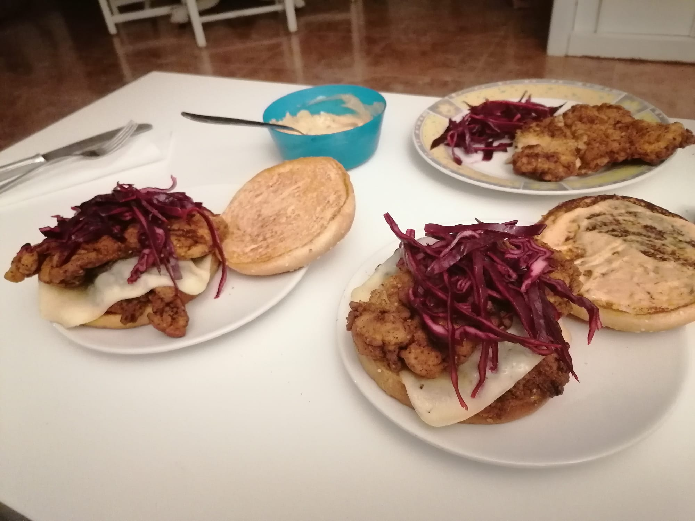

4 Hamburguesa Gringa

FOTO
Ingredientes
- Muslo de pollo.
- Queso en lonchas.
- Col lombarda.
- Lima.
- Pepinillos.
- Cilantro.
Rebozado:
- Harina de trigo (70%).
- Harina de maíz (30%).
- Especias.4
Marinado:
- Leche
- Zumo de limón
- Huevo.
- Especias.
Salsa:
- Mayonesa.
- Miel.
- Chipotles en adobo.
Preparación
- Marinar el pollo desde el día anterior.
- Rebozar y freír el pollo en aceite de girasol muy caliente.
- Mientras tanto, tostar el pan y preparar la salsa.
- Cortar la col lombarda fina y echarle un poco de zumo de lima.
- Untar el pan con la mayonesa de chipotle y montar la hamburguesa.
Falafel
Goulash
Usar una mezcla de todo lo que haya por casa (10 especias mínimo).↩︎